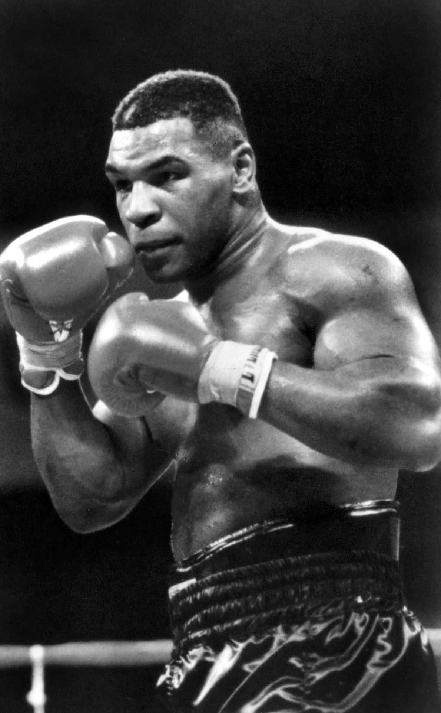
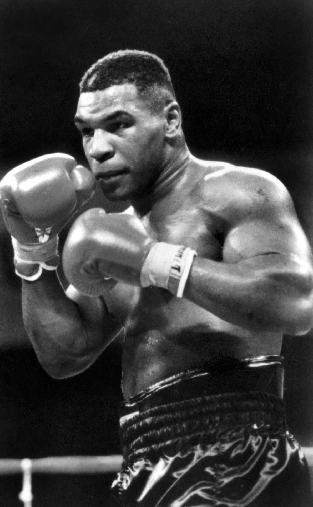

|
 |  |
Discipline plays a fundamental role in the development of an athlete, both physically and mentally. It’s not just about following the rules of the game, but about maintaining a constant attitude of commitment, sacrifice, and self-control. Every sport requires frequent and repetitive — often tiring — training sessions that test an individual's willpower. Without discipline, it's easy to give in to laziness or frustration when results don't come quickly. A disciplined athlete, on the other hand, trains consistently, listens to the coach’s advice, maintains proper nutrition and rest, and approaches every competition with seriousness. Even in difficult times — such as injuries, defeats, or pressure — discipline becomes an anchor that helps them not to give up. This mindset builds not only athletic performance over time, but also the athlete's personality: more responsible, determined, and resilient.
Discipline is also crucial in team life: it fosters respect for others, cooperation, and self-control. Without it, true team spirit cannot exist. In short, discipline is not only a means to becoming a good athlete, but a real school of life that shapes stronger, more balanced, and more self-aware individuals.

Discipline is one of the foundational pillars of the sports world, and legendary athletes like Cristiano Ronaldo, Mike Tyson, and Usain Bolt are living proof of that — each in their own way.
| Cristiano Ronaldo is known for his extraordinary work ethic: he follows a strict training routine, maintains an extremely controlled diet, and dedicates himself fully to physical fitness. His success is not just about talent, but mostly sacrifice and consistency. | Mike Tyson, despite a career marked by excesses and downfalls, was a prime example of athletic discipline in his early years. As a teenager, under the guidance of his trainer Cus D’Amato, he trained hard every day, showing focus and rigor that led him to become the youngest heavyweight world champion in history. | Usain Bolt, although often appearing carefree, achieved extraordinary results thanks to serious commitment in training and perfecting his technique. His discipline made him the fastest man in history. |
|
 | |